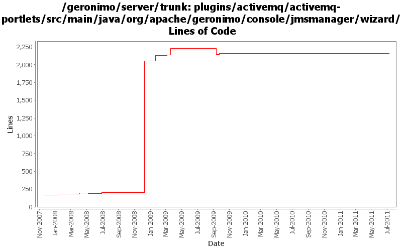

[root]/plugins/activemq/activemq-portlets/src/main/java/org/apache/geronimo/console/jmsmanager/wizard

| Author | Changes | Lines of Code | Lines per Change |
|---|---|---|---|
| Totals | 71 (100.0%) | 2424 (100.0%) | 34.1 |
| dwoods | 43 (60.6%) | 2043 (84.3%) | 47.5 |
| xuhaihong | 16 (22.5%) | 316 (13.0%) | 19.7 |
| genspring | 1 (1.4%) | 38 (1.6%) | 38.0 |
| jdillon | 7 (9.9%) | 13 (0.5%) | 1.8 |
| djencks | 1 (1.4%) | 13 (0.5%) | 13.0 |
| gawor | 1 (1.4%) | 1 (0.0%) | 1.0 |
| gdamour | 2 (2.8%) | 0 (0.0%) | 0.0 |
GERONIMO-6058 Replace StringBuffer usage with StringBuilder
2 lines of code changed in 1 file:
GERONIMO-5859 Reenable JMS related portlets, patch from Shenghao Fang
38 lines of code changed in 1 file:
Cleanup some codes in the ActiveMQ plug-in
3 lines of code changed in 1 file:
Disable the function of view history topic messages due to recent change of ActiveMQ
19 lines of code changed in 1 file:
GERONIMO-4873 Unable creating a new JMS Resource Group via "For another JMS provider... " under IE
0 lines of code changed in 2 files:
GERONIMO-4625 JMS statistics does not work correctly while the server url is of vm protocol
153 lines of code changed in 6 files:
GERONIMO-4625 JMS statistics does not work correctly while the server url is of vm protocol
First step change, at least the portlet could display correctly even if the broker name could not be detected.
14 lines of code changed in 1 file:
GERONIMO-4749 The resource adapter created via console should be deployed as car(Patch from Rex Wang)
1 lines of code changed in 1 file:
GERONIMO-4454 JMS Resources - Destination stats not suported with new AMQ5
124 lines of code changed in 3 files:
GERONIMO-4550 No error message displays in console when fail to create jms resource. Patch from Gang Yin.
12 lines of code changed in 7 files:
GERONIMO-4475 Improve JMS portlet for Borker configuration. Applied 4 patches from Ivan.
113 lines of code changed in 2 files:
GERONIMO-4484 Extraction, localization and display of messages generated in portlets. Applied common-message_fix.patch from Gang Yin.
2 lines of code changed in 1 file:
GERONIMO-4484 Extraction, localization and display of messages generated in portlets. Applied common-message-openejb.patch, common-message-activemq.patch, common-message-debugviews.patch, common-message-plancreator.patch and common-message-sysdb.patch from Gang Yin. Also updated 2 console-testsuite DB tests to match modified message strings.
12 lines of code changed in 3 files:
GERONIMO-4337 rename AMQ5 modules to old names that apps expect
1850 lines of code changed in 7 files:
GERONIMO-4337 rename AMQ5 modules to old names that apps expect
0 lines of code changed in 7 files:
GERONIMO-4337 remove old AMQ4 based modules
21 lines of code changed in 7 files:
use queueName as PhysicalName if PhysicalName is undefined
1 lines of code changed in 1 file:
GERONIMO-3983 Update JMS Resource portlet to show the Destination statistics. Thanks Anish for the patch.
14 lines of code changed in 1 file:
More loggers back to static
2 lines of code changed in 2 files:
(GERONIMO-3985) Use SLF4J as the primary logging facade for Geronimo
11 lines of code changed in 5 files:
GERONIMO-3819 Update JMS Resources Portlet. Patch from Anish Pathadan.
19 lines of code changed in 8 files:
GERONIMO-3732. Move the rest of deployment functionality out of console base and (mostly) into plugin-portlets. Revert the accidental menu name change for looking at web apps
13 lines of code changed in 1 file:
When distributing w/o the explicit selection of a target, we only distribute
to the first target returned by DeploymentManager. This first target is
the default target, or configuration store, and users can specify an abstract
name query (in EditableKernelConfigurationManager) to identify this default
target.
Now that multiple configuration stores per server are better handled
out-of-the-box, we can re-enable the "clustered" configuration stores.
Also, let's more the rmock dependency to testsupport-common so that we
can use it from all our tests.
This fixes GERONIMO-3612 - When no target configuration store is explicitly
specified while installing a configuration, the configuration should be
installed to a default configuration store
0 lines of code changed in 2 files: